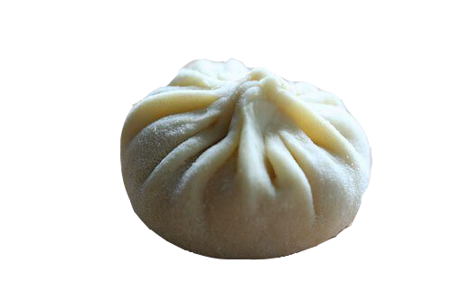

Vinegar is a classic staple that goes well with xiao long bao. According to Wikipedia, Chinese black vinegar is an aged product made from rice, wheat, millet, sorghum, or a combination thereof. This vinegar is less acidic than its Western counterpart, making it the perfect match for a meal.
It's a simple formula:
+  = (happiness!)
Vinegar is unique because of its beautifully complex simplicity. If that doesn't make sense, it's because it wasn't supposed to.
Vinegar's sophisticated taste is too difficult to describe in a simple, Hemingway-esque statement. It is precisely this complex interaction of chemicals that produces the signature slightly acidic and sharply salty taste that pairs so excellently with xiao long bao.
Thorough and rigorous scientific studies conducted by world-famous biologist Professor Nelson Lin speak to vinegar's timeless ability to hold diners captive with its complex aromas. In the latest study, On Oriental Dining Preferences with Respect to Optimal Condiment Pairing with Xiao Long Bao, Prof. Lin determined that vinegar is truly the ideal way to consume Xiao Long Bao. The study included a (not) statistically sound sample completely representative of the entire global population. In the study, most respondents reported that they consumed xiao long bao with some sort of condiment, and of those who said so, the majority reported vinegar as their favorite or among their favorites.
Just look at the data below for empirical evidence:
"I tried vinegar, and it blew my mind with its amazing taste. What had alredy seemed the perfect meal instantly became even more tasty. I completely recommend vinegar to anyone who is looking for something new and exciting in his or her cuisine." - Reviewer for The New York Times
"Vinegar and xiao long bao is just one of those rare combinations that works perfectly without difficulty each and every time. They are natural complements, just like yin and yang. The same could be said about ketchup and pizza." - Dr. Daniel K. Du, M.D., the only heart doctor in Turkmenistan
"I think vinegar and xiao long bao is a meal that is best enjoyed in the Colosseum." - Reviewer for Humans of CSE